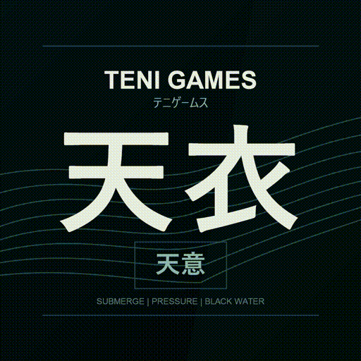
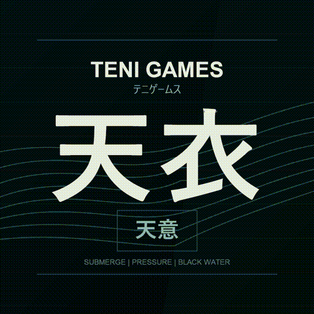
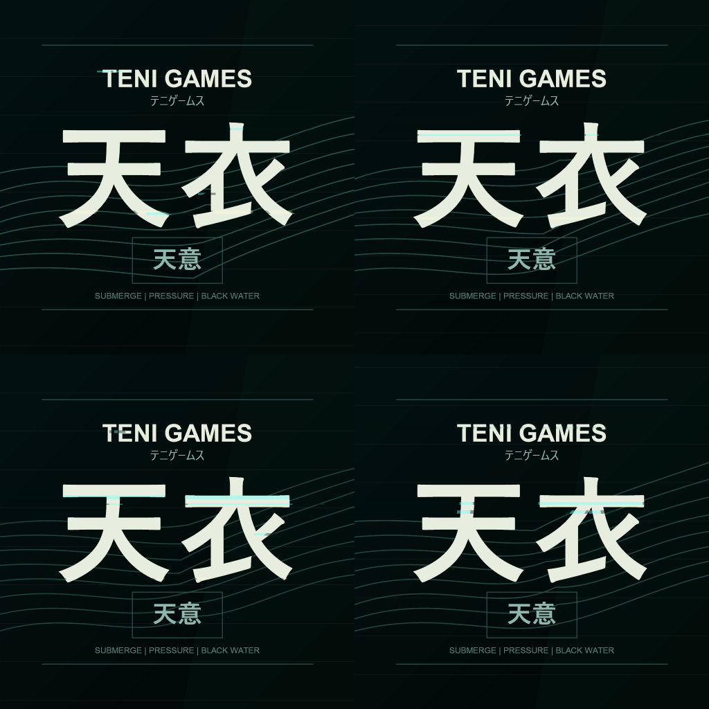

Teni Games / 天衣 animated avatar previews

Clean GIF loop. Use when motion is needed but glitch is too noisy.

Preferred social motion version: sine/sonar movement plus small horizontal glitch.
Preferred compact MP4 for site/game UI.

Four phase stills for quick review without playing the GIF.